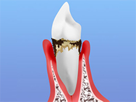

- トップ
- 歯周病
歯周病の基礎知識
歯周病は日本人が歯を失う原因の第一位で、平成１７年歯科疾患実態調査４５歳〜５４歳の年齢層で約８８％を示し、加齢と共に増加する傾向にあり、３０歳〜６９歳では８０％以上の有病率と示されています。また歯周病は、ギネスブックに「人類史上最も感染者の多い感染症」と紹介されている感染症です。初期には自覚症状がない為、気が付いた時には手遅れというケースも多数あります。
何故歯周病治療が困難か?
歯周病はギネスブックに人類史上最も感染者の多い感染症と紹介さています。感染症の治癒とは感染がなくなる事です。単純に考えると歯周病の原因となっている菌や汚染物質などを除去できれば、良好な予後が期待できると考えられています。では、何故歯周病は治らないのでしょうか？それは未だ手指の感覚や歯石除去時の音、経験を基にして歯石が取れているか判断しているからというのが一つの原因と考えられます。
歯周病の程度
※表は左右にスクロールして確認することができます。
| 歯肉炎 （軽度歯周炎） |
歯周炎 | 重度歯周炎 |
|---|---|---|
|  | ||
| 歯周ポケット（歯と歯ぐきの隙間）に軽い炎症が見られます。ブラッシングをすると出血が見られ、口臭もきつくなってきています。ただし、痛みなどがないためほとんどの方が、自覚のないまま過ごしてしまいがちです。 | 歯ぐきが下がって、歯が長くなったように見えます。プラークが石灰化して「歯石」となり、歯の表面にこびりつきます。歯ぐきの炎症が進むだけでなく、歯を支える顎の骨が少し溶かされ、歯を押すと少しグラつきがあります。 | 歯ぐきから膿が出たり、歯を押すと大きくグラついたり、食事でしっかり噛めなくなってきています。顎の骨が大きく溶かされているため、歯が抜けてもおかしくない状態です。出血や膿、口臭がひどくなっていることがあります。 |
歯周病の”全身への影響”にご注意ください
歯周病はお口の中でトラブルを起こすだけでなく、気管や血管内に入り込むことでさまざまな問題を引き起こすことがわかっています。
※表は左右にスクロールして確認することができます。
| 糖尿病 | 誤嚥性肺炎 （ごえんせいはいえん） |
心筋梗塞・脳梗塞 |
|---|---|---|
 |
||
| 歯周病と糖尿病の相関関係は深く、どちらかにかかっていると、もう片方にかかりやすくなったり、悪化したりするため注意が必要です。そのため、歯周病の治療によって糖尿病の改善も期待されています。 | 高齢者の誤嚥性肺炎の原因は、口腔内の歯周病菌だと考えられています。お口の中から気管や肺へ入り込んだ歯周病菌がそこで炎症を引き起こすためです。介護の現場では、肺炎予防として歯周病ケアが進められています | 動脈硬化症や大動脈瘤などの病変部位から高い確率で歯周病菌が発見されています。歯周病菌は血管内で血栓を作りやすいことがわかっており、血栓が心臓や脳へ至り、命に関わる重大なトラブルを引きこすのです。 |
| 肺炎・関節炎・腎炎 | 早産・低体重児出産 | 骨粗しょう症 |
| 最近の研究で、関節炎や糸球体腎炎の原因となる細菌が、歯周病菌であると指摘されています。口腔内で増殖した歯周病菌が血管内に入り込みさまざまな身体の部位で問題を起こしています。 | 妊娠中は免疫力の低下から歯周病にかかりやすくなると注意喚起されています。また、歯周病菌が出すサイトカインという物質が、子宮を収縮させて早産や低体重児出産につながると考えられています。 | 骨粗しょう症によって、歯槽骨ももろくなります。そのため、歯周病と相互に悪化させあう関係となっていることがあります。また、骨粗しょう症の内服薬を飲んでいる方が抜歯によって、周囲の骨が壊死してしまうということもあるので注意が必要です。 |
高田歯科クリニックでの歯周病治療
従来の肉眼で行う盲目的な歯石除去では歯石を取り除くことは以下で紹介する文献からもわかるように困難と考えています。それは未だ手指の感覚や歯石除去時の音、経験を基にして歯石が取れているか判断しているからです。当院ではマイクロスコープの拡大視野下で、しっかり汚染物質を観て取りきる（デブライドメン）を行っております。マイクロスコープを用いて拡大視野下で低侵襲性に処置を行うことは患者に多くの利益をもたらすと考えているからです。
エビデンス（医学的根拠）ある治療
これらの論文は、アメリカの歯周病専門医の研究の論文で、エビデンスレベルは高く、信用のおける論文です。これらの論文からもわかるように肉眼で行う歯石除去の処置では歯石を取り残す可能性が非常に高くなります。したがって、マイクロスコープの拡大視野下で行うデブライドメントは、盲目下で行う保険の歯石除去とは違い、目で見て行う為、確実性が高いと考えられます。
歯周ポケットの深さが3.73mm以上になると、歯石を取り残す可能性が高い。
Stambaugh RV, DragooM, Smith DM, Carasali L: The limits of subgingival scaling. Int J Perio Rest Dent, 1(5): 30-41, 1981
5mm以上のポケットでは、歯石を取り残す危険性が非常に高い。
※この報告書では89％の取り残しが確認されている
Waerhaug J: Healing of the dento-epithelial junction following subgingival plaque control. Ⅱ: As observed on extracted teeth. J Periodontol, 49(3): 119-134, 1978.
非外科処置も外科処置も、術後に実体顕微鏡（=手術用顕微鏡）でみると歯石の取り残しがみられた。フラップをあけて処置しても3mmまでの浅い歯周ポケットでも処置後に14％歯石の取り残しがあり、4～6mmでは24％、6mm以上では50％取り残している。
Caffesse RG et al: Scaling and root planing with and without periodontal flap surgery. J Clin Periodontol, 13: 205-210, 1986.
実際のデブライドメント映像
麻酔下にて歯茎を切開することなく特殊なマイクロ用器具を用いて歯石を低侵襲性に除去しています。保険で行う歯石除去のように、感覚による治療ではなく、歯茎に切開を加えず、マイクロスコープを用いて拡大視野下で目で見て歯石除去を行う為、患者に多くのメリットがもたらされると考えています。
※出血シーンがありますのでご注意ください。
歯周病で失われた歯周組織は何もせずに自然治癒することはありません。歯槽骨（歯を支える顎の骨）が溶かされた（吸収された・痩せたという表現をすることもあります）場合には、再生療法が必要になることもあります。患者様のお口の状態によって、どのような治療が最適であるかは異なりますので、まずはご相談ください。
PICK UP！歯周外科治療にも対応しています
当院では、マイクロスコープ（手術用顕微鏡）を使用した低侵襲性に行う、歯周再生療法や歯肉移植など専門性の高い歯周外科処置にも対応しています。